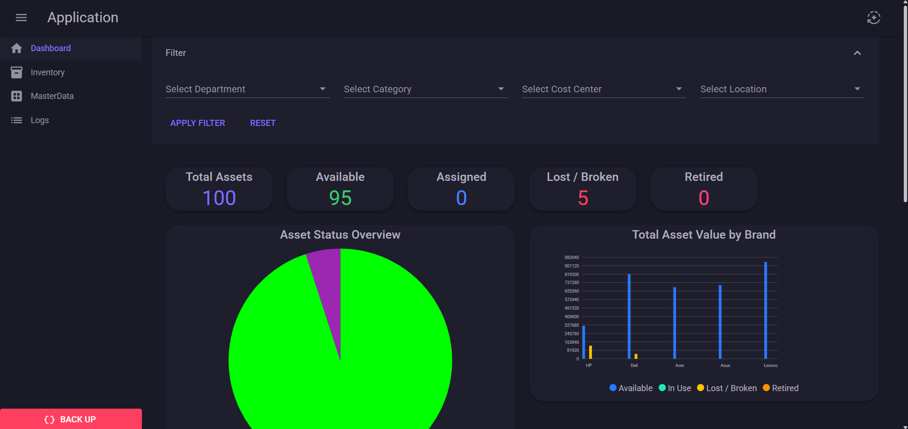

Developer Portfolio
Web Applications, and Software Engineering Projects.

C#
ASP.NET
SQL
Server
IT Equipment Management
A web application designed to streamline the management of IT equipment within an organization. It features a user-friendly interface for tracking inventory, managing equipment lifecycle, and generating insightful reports. The application is built with .NET and C#, following a clean architecture approach. SQL Server serves as the backend database, providing reliable data storage and retrieval capabilities.
Key Outcomes
- check_circle Fast and easy to understand the status of IT equipment.
- check_circle Simple to use and maintain.